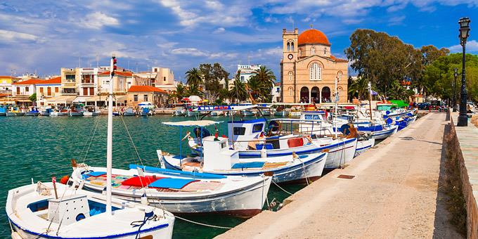
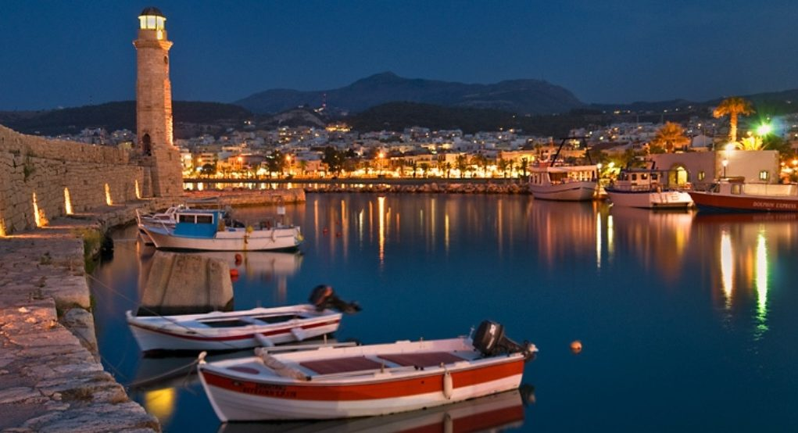
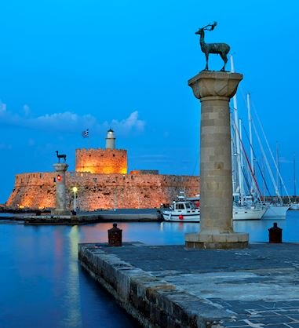
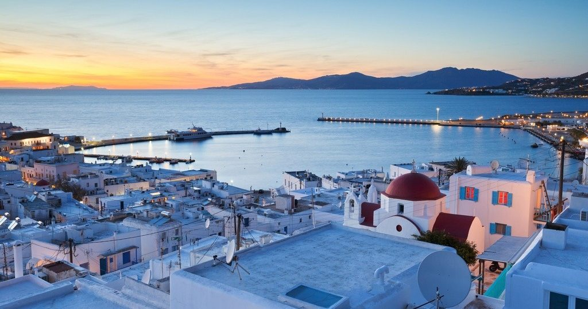
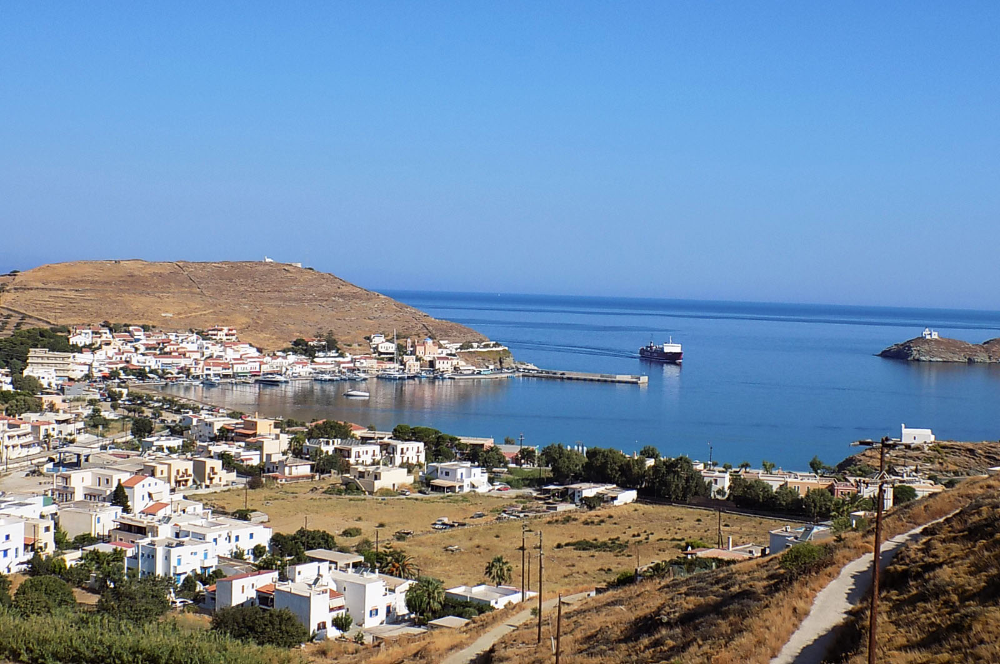

Travelling
One thing that I really like is travelling. When I have time, money and not being in a quarantine, I really enjoy exploring new places.
The places I have been so far are:
-

Aegina
Aegina is one of the Saronic Islands of Greece in the Saronic Gulf, not that far from Athens. Within less than an hour, someone can go and visit that small island. It's a destination where everyone can go and relax for some days, especially to break the everyday routine. Whenever I want to take a mini excursion, I call my friends and we go to the port to take the ferry boat. Although it is a very popular destination due to the fact that it is really close to Athens, this island has some hidden beaches that do not have so many people and is really clean and peaceful.
-

Crete
This island is one of the biggest in Greece and one my favorite destinations. Although I haven't been there many times, I fell in love with that place. The first time I had gone to Crete was with a school trip and we had travelled all over the island but the one place that stole my heart was Rethymno. The second time I travelled for 12 hours to reach my destination was to visit my bestfriend who studies at the University of Rethymno. Unfortunately I cannot visit her that often, because of the huge amount of projects that I have to do for the university.
-

Rhodes
Rhodes is the largest of the Dodecanese islands and is also the island group 's historical capital. Administratively the island forms a separate municipality within the Rhodes regional unit, which is part of the South Aegean administrative region. The principal town of the island and seat of the municipality is Rhodes.The city of Rhodes had 50,636 inhabitants in 2011. It is located northeast of Crete, southeast of Athens. Rhodes' nickname is The Island of the Knights, named after the Knights of Saint John of Jerusalem, who ruled the island from 1310 to 1522.
-

Tinos
Tinos is one of the Cyclades islands and it is very popular for its religious tourism, because of the Church of Panagia Evangelistra. But this island is not just that. It has many beautiful and peaceful beaches and for the ones that love parties there are many clubs where someone can dance until the next morning. I haven't visited Tinos many times but something that is unforgettable is that little tavern in Chora of Tinos and that really kind old man that with his foods and stories made me and my friends believe that for a moment we have travelled to a different era.
-

Tzia
Last but not least, Tzia is an island near Lavrio and although I have said for every island I have visited that is peaceful, this is the most quiet and peaceful place I have ever been in my life. It doesn't have many night clubs, just some bars that do not stay open until the sunrise. Usually young people just hang out at the port or the square of the island, something that I enjoy a lot. The people there are really hospitable and do not treat you like you are a stranger or a threat to them.
Binge-Watching
Except from travelling, I enjoy hanging out with my friends. Some times we go out for a walk or when we are bored,
we just stay inside and watch movies and series all together.
Some of our favourite TV series and movies are:
| TV series | Movies |
|---|---|
| Friends | Fight Club |
| How I Met Your Mother | Inception |
| Chernobyl | Pulp Fiction |
| Peaky Blinders | Iron Man |
| La Casa de Papel | Once Upon a Time... in Hollywood |
Music
However, there are some times that I cannot meet my friends and I do not want to be alone.
Therefore, music is there to keep me some company. I have created some playlists on Spotify
and whenever I feel like I want to free my mind from the things that happened that day, I listen to them and I relax.
The genres I enjoy listening are:
- Pop
- R&B
- Rap/Hip-Hop
- Rock
- Alternative
One song that is an "all-time-classic" and one of my favourite songs is the "Bohemian Rhapsody" by Queen.